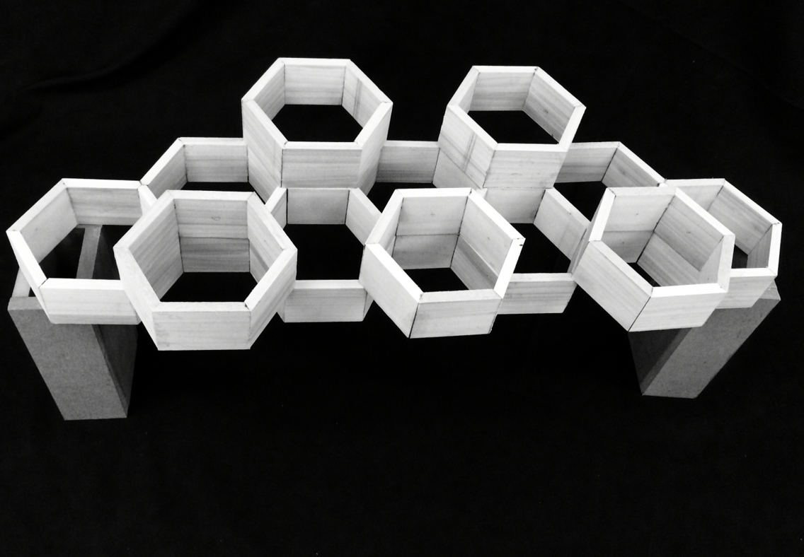
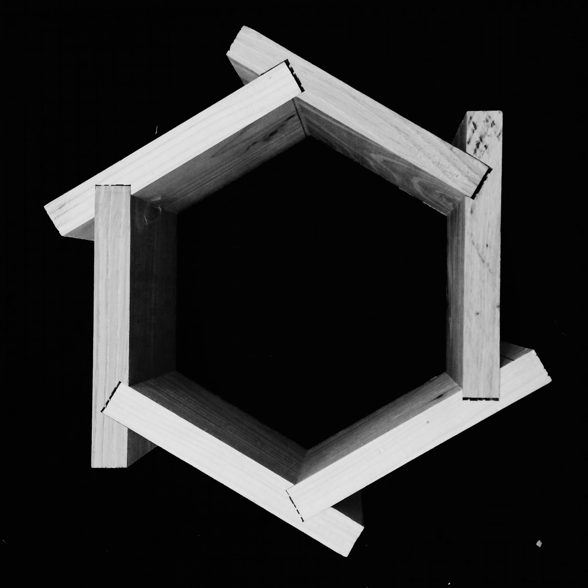
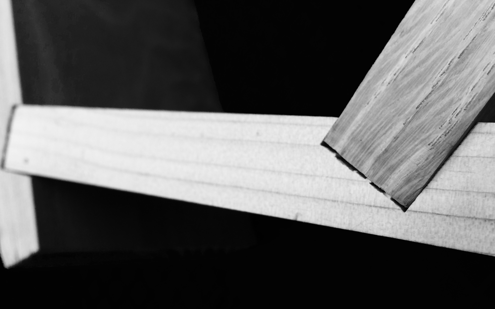
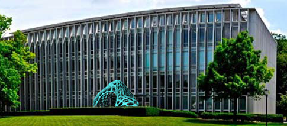
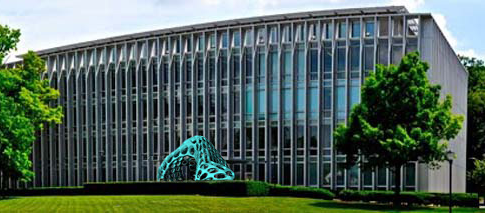

First Year Architecture
SPAN
Studio Spring 2016
Partnered with another student and tasked to balance strength, function, and delight in order to create a 48" wooden span between two 5x8x16" supports. Though digital models, hand sketching, and other exploration we investigated different spans and finally decided on a hexagon with optimized two and three piece joints would provide just the right amount of strength and a clean look that we were reaching for without engineering a basic bridge like structure. The first two images depict one of our earlier concept half scale models. We later changed the orientation and type of joint being used so that we would not need to use any glue at all.

The final joint type. This shows one module which would vary depending on the position in the span.


The final joint type. This shows one module which would vary depending on the position in the span.
The contruction drawings made with a Rhino Model and Illustrator are below.
This assignment required the use of paneling tools in Rhino to create a "fruit or vegetable inspired folly" for the outside of Hunt Library on Carnegie Mellon's Campus. My 1st phase focused on the modeling process of an avocado and the 2nd phase focused on the process of creating a form derived from the avocado and paneling over it using custom 3D paneling tools.

 
Here's the interactive model!

Here's the interactive model!
Marble Mover
Studio Spring 2016
This project relied strictly on the materiality of 11x17" paper to create a structure on or through which a marble could travel. I used the curve of a scanned tree branch to create a path that the marble moves along and it appears in my final hybrid drawings. Working extensively with different types of oragami and kirigami enabled me to think more about symmetry, rhythm, direction of a marble's movement and speed dependent on gravity, limits, making many slightly varied things by hand and testing many times how intentional and interesting the marble could move.


Photography
Continuous / Under Construction
Currently moving images to a new site, check back later!